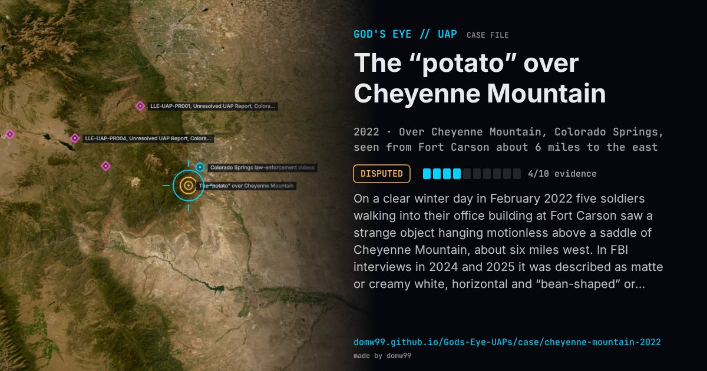

The “potato” over Cheyenne Mountain

On a clear winter day in February 2022 five soldiers walking into their office building at Fort Carson saw a strange object hanging motionless above a saddle of Cheyenne Mountain, about six miles west. In FBI interviews in 2024 and 2025 it was described as matte or creamy white, horizontal and “bean-shaped” or “potato”-shaped, covered in irregular panels or ridges; one account says the panels shifted in slow waves while the object stayed still. None of them had a phone. When they looked away to send someone for one, it was gone. Each drew it separately and the drawings matched. The accounts disagree on the time, from 9:35 in the analysis to late morning or early afternoon in the interviews. The files (FBI-UAP-D001 to D003 and the analysis) were released in June 2026.
Explanation
An intelligence analysis released with the files (ICA-UAP-D001) suggests sunlight reflected off the snow-covered mountain lighting a patch of low cloud, which would also explain the sudden disappearance, but it holds that view with low confidence: the witnesses’ fields of view, the snow cover and the cloud are uncertain, and the soldiers said the sky was clear while weather reports suggest it was partly to mostly cloudy. No aircraft or balloons were found in the area at the time. The witnesses rejected a blimp or a balloon because the object did not move.
What was seen
Shape: A white or opalescent, asymmetric “bean” or “potato” covered in irregular panels or ridges; “roughly the size of a large jet” in the analysis’s summary of the accounts
Witnesses: Five U.S. Army soldiers from one unit at Fort Carson
Duration: From 30 seconds to five minutes, depending on the account
Sources
- FBI-UAP-D001, interview with one of the soldiers, 2025 (copy at The Black Vault)
- FBI-UAP-D002, forensic sketch interview, 2024 (copy at The Black Vault)
- ICA-UAP-D001, analysis: “possible backscattering of sunlight” (copy at The Black Vault)
- Fox News — Pentagon files reveal agents’ reports of “orbs launching orbs” (June 16, 2026)
Browse
- United States
- 2020s
- Disputed
- Mass sightings
- Official government documents
- Many independent witnesses
- Military witnesses